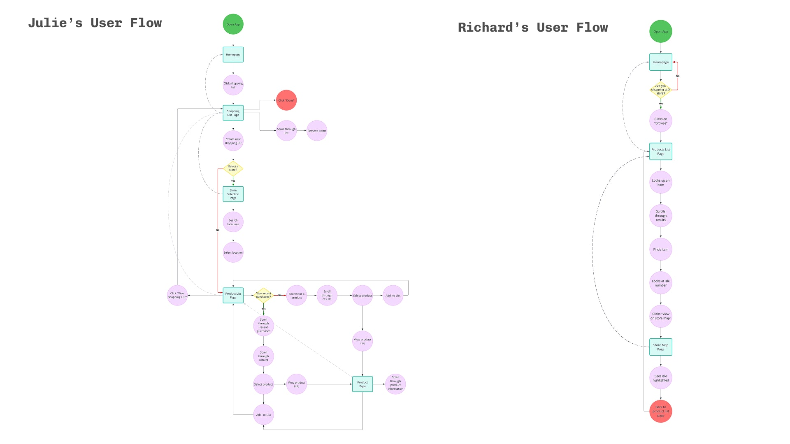

Sensco App
UI/UX
The Sensco app is an e-commerce app for a medium sized supermarket chain. The app has two core functions; to allow users to order their groceries online and to assist customer’s shopping in store through features like an interactive store map, smart shopping list and stock availability.
Timeframe: March 2024 - December 2024
My Role: UX Designer involved in the whole design process from conception to delivery.
Responsibilities: Conducted research. including interviews and competitive audits, created wireframes, mock ups and high-fidelity prototypes, conducted user testing and iterated on designs.
Adding items to shopping basket
The store map feature
Checkout process
User Research
I started the project by conducting interviews with a range of people from different demographics to understand how they do their grocery shopping, how it fits into their schedules and to identify any frustrations that they experience along the way.
A section of the empathy map I created based on the interviews I conducted.
The main pain points that I identified were:
1. Most users are annoyed when things are out of stock, especially common items.
2. Most users get annoyed when they can’t find items they are looking for.
3. Some users are disappointed by the lack of assistance/staff when looking for things
Based on the interviews that I conducted I created some user personas.
A couple of examples of the user personas.
Based on the user personas I started to ideate using the “Crazy 8” method where I drew 8 sketches per user persona spending 1 minute on each sketch. The pressure of thinking and drawing quickly allowed me to come up with a broad range of ideas - most of them totally ridiculous but some of them actionable.
Some examples of the sketches I made
Competitive Audit
With some ideas generated for the app the next step was to conduct a competitive audit which involved analysing the apps and websites of competitors websites. The competitors I looked into were:
- Sainsbury’s
- Tesco
- Waitrose
- Lidl
- Ocado
- Walmart (Indirect Competitor)
View the Competitive Audit Report to read a detailed summary of my findings.
Design Process
Based on my research findings I started the design process by creating a series of paper wireframes. Creating paper wireframes allowed me to explore different designs quickly.
Some examples of the wireframes
These paper wireframes were then digitised and turned into a low-fidelity prototype.

Screenshot of the lo-fi prototype
The next step was to test the low-fidelity prototype using a moderated usability study. The prototype was tested on four participants from different demographics.
The tasks that they completed were:
1. Find the checkout and place an order for delivery
2. View a shopping list and find out what aisles the list of products are located on.
3. Find where you can update your payment information
4. Select a store and find its store map.
Common themes found in the study included:
- It was observed that 4 out of 4 subjects had trouble figuring out howe to locate the aisle numbers on the shopping list page. This means that the aisle numbers were difficult to locate for all users.
- It was observed that 2 out of 4 users confused the shopping list feature with the browse products section because these features look similar. This means that half the users confused the shopping list feature with the browse products section.
- It was observed that 2 out of 4 participants thought the payment information was located on the “change account details” page rather than the “payment wallet” page. This means that half of the users might struggle to find where to update their payment information.
Design Process
Based on the usability study results I made some changes to the designs. Below you can see a couple of these examples:

Itterations made to the account settings page

Itterations made to the shopping list page